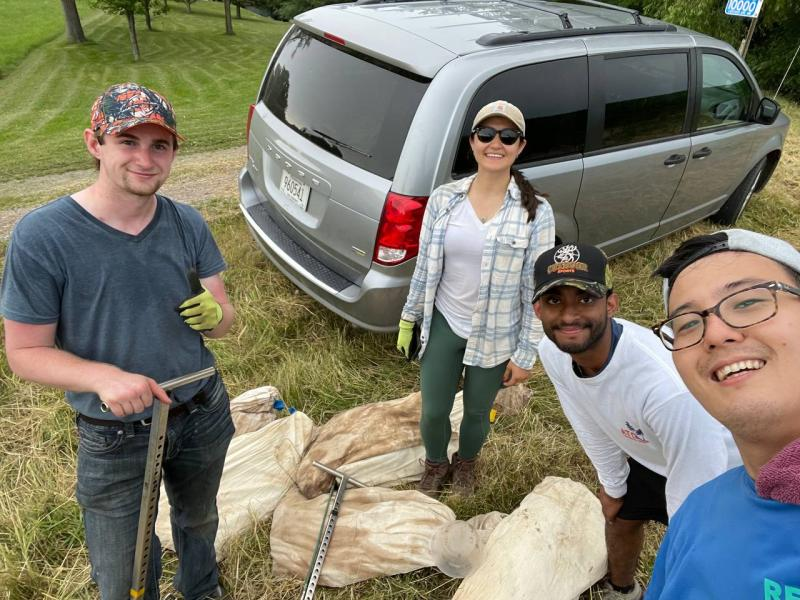

Nicholas Brand
About Me
- My name is Nicholas Brand. I was born and raised in Winona, Minnesota, and currently reside in St. Paul. I am a GIS Analyst with a strong background in geospatial analysis, topographic modeling, and web development. I graduated from Arizona State University with a Bachelor of Science in Geographic Information Systems, where I developed expertise in spatial data analytics, programming, and field research. My work focuses on applying GIS to solve real-world problems in areas such as precision agriculture, environmental monitoring, and natural hazard analysis.
- I am passionate about leveraging geospatial technologies to create impactful solutions. My skills include programming in Java, C++, Python, JavaScript, HTML/CSS, SQL, C, R, and Bash as well as proficiency in tools like ArcGIS, QGIS, and remote sensing platforms. I enjoy working on projects that combine data analysis, visualization, and fieldwork to address complex environmental and agricultural challenges.
- I am currently seeking a role as a GIS Technician, Geospatial Analyst, or Web Developer where I can apply my technical skills and research experience to contribute to innovative projects. I thrive in collaborative environments that encourage professional growth and provide opportunities to expand my expertise in GIS applications.
Relevant Work Experience
- Applied geospatial analysis using LiDAR, drone imagery, satellite imagery, and weather data in ArcGIS and QGIS to build and maintain a geospatial database.
- Developed Python and R scripts to automate processing of large geospatial and agricultural datasets, improving efficiency in GIS Operations, data collection, and technical documentation.
- Led cross functional teams in designing and maintaining a Precision Agriculture Research Network Website.
- Conducted fieldwork and GPS guided data collection (water, soil, crop, and instrument sampling), ensuring accurate digitizing, plotting, and spatial integration directly supporting field to database workflows.
- Engaged stakeholders (farmers, researchers, and the public) to coordinate sampling, interpret data, deliver actionable insights and products.
- Opening, daily operations, and closing.
- Training staff in key phrases for rule enforcement and ways to continue to enforce safety.
- Wrote, taught, and created our current EAPs.
- Dealt with all Behavioral, Rescues, and Emergency Medical Situations that occured on site.
- Staff coordination for scheduling, programming, and private rentals.
- Measuring boundary lines using survey equipment to update field maps.
- Ran analysis and organized source data from Landsat, MNTopo, and drone imagery.
- Supervised and led field work on Soil, water, crop, and air pollution samples from various pieces of equipment.
- Conducted geochemical spectroscopy analysis with pXRF & XRF spectrometers.
- Staff coordination for scheduling, lessons, and concessions.
- Opening, daily operations, and closing.
- Training lifeguard and WSI staff in key phrases for rule enforcement and ways to continue to enforce safety.
- Dealt with all Behavioral, Rescues, and Emergency Medical Situations that occured while I was on site.
- Strategic planning and implementation of reopening with covid 19 protocols.
UMN, Precision Agriculture - Researcher / Field Coordinator
(May 2024 - Present)
City of Winona, Park & Rec - Assistant Manager
(April 2023 - May 2024)
UMN, Precision Agriculture - Internship
(May 2022 - July 2023)
City of Winona, Park & Rec - Aquatic Assistant Manager / Site Manager
(May 2017 - August 2021)Education
- Relevant Courses: Fundamentals of Coding, Geographic Info Science 1-3, Stats for Geography & Planning, Adv Stats Geography & Planning, Cartography & Georepresentation, Geodesign and Urban Planning, Env Mgmt Systems & Strategy, Remote Sensing & Geo Analysis of Natural Resources & Environment, Basic Soil Science.
Arizona State University - Geographic Information Science (BS)
(August 2023 - May 2025)Skills
- Java, C++, Python, HTML/CSS, SQL, C, R, Bash
- GitHub, Windows, Esri Suite (ArcGIS, Collector, etc.), Visual Studio, RStudio, Web Soil Survey, Citrix, GoDaddy, Squarespace, Drupal, MNTopo, SMS Basic, Yield Editor, QGIS, PlanetGIS, USGS Landsat, MNTopo
Programming Languages:
Tools and Platforms:

Projects
PAC On-Farm Research Network

The PAC On-Farm Research Network is a collaborative initiative aimed at advancing precision agriculture practices through on-farm research and data-driven insights.
Precision Nitrogen Managment

The PAC On-Farm Research Network is a collaborative initiative aimed at advancing precision agriculture practices through on-farm research and data-driven insights.
Effect of Slope & Climate on Yield

The PAC On-Farm Research Network is a collaborative initiative aimed at advancing precision agriculture practices through on-farm research and data-driven insights.